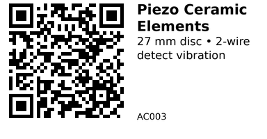

Piezo Ceramic Elements - AC003¶
Thin piezoelectric brass/ceramic discs (≈27 mm Ø). They generate a voltage when flexed, so they can be used as vibration/knock sensors; driven with an AC waveform they work as a very small buzzer/sounder. Choose these when you need a quick impact/vibration input or a lightweight beeper. For vibration sensing, add a high-value load resistor and protect the ESP32 pin from voltage spikes.
Links¶
- Where to buy: AliExpress
- Datasheet: PDF (generic 27 mm piezo diaphragm; exact spec varies by seller)
- Tutorial: Detect a Knock (piezo vibration)
Specifications¶
From the listing:
- Type: Piezo elements (metal/brass + ceramic)
- Diameter: 27 mm
- Leads: pre‑soldered wires (varies by batch)
- Pack size: 10 pcs
- Typical uses: speech/music transducer, percussive sensors, drum pads
(No detailed electrical specs on the listing. See the generic datasheet above for typical resonance and capacitance of 27 mm discs.)
Pinout & Addresses (common breakout labels)¶
Bare disc with two leads:
- Any lead → signal
- Other lead → GND
- Polarity isn't important for sensing; for driving as a buzzer, apply a small AC waveform across the two leads.
Wiring¶
Vibration (safe for ESP32 ADC):
- Solder or clip the disc to the target surface for best sensitivity.
- Connect one lead to an ESP32 ADC pin (e.g., GPIO34).
- Put a 1 MΩ resistor in parallel with the disc (from ADC pin to GND) to load it and reduce spikes.
- Add protection: two 1N4148 diodes from the ADC pin to 3V3 and GND (clamp), or a 100 kΩ series resistor plus the 1 MΩ load.
- Share GND with the ESP32.
Simple buzzer (quiet):
- Drive with a small‑signal AC (e.g., 2–5 kHz PWM via a series resistor ≥100 Ω). For louder output use a proper driver stage.
Gotchas¶
- Piezo discs can produce large voltage spikes when hit—always use a high‑value load and clamping or series resistance to protect the ADC.
- Very high impedance → long wires pick up noise; keep leads short or shielded for sensing.
- Mounting strongly affects sensitivity and tone.
How to use¶
Read vibration on ESP32 (ADC + threshold):
// Needs no external libs. Wire disc to GPIO34 (ADC1_CH6).
// Add 1 MΩ from GPIO34 to GND, and clamp diodes or a 100 kΩ series resistor.
const int PIEZO_PIN = 34; // ADC pin
const int THRESHOLD = 1200; // tweak based on your hardware (0..4095 on 12‑bit ADC)
const int QUIET = 20; // ignore tiny noise
void setup() {
Serial.begin(115200);
analogReadResolution(12); // 0..4095
analogSetPinAttenuation(PIEZO_PIN, ADC_11db); // wider range
}
void loop() {
int v = analogRead(PIEZO_PIN);
static uint32_t lastHit = 0;
if (v > THRESHOLD) {
uint32_t now = millis();
if (now - lastHit > 50) { // simple debounce
Serial.printf("Knock! peak=%d\n", v);
lastHit = now;
}
} else if (v > QUIET) {
// optional: stream baseline/noise
}
delay(2);
}
Tiny beep (very quiet):
// WARNING: Piezo discs are capacitive. Use a series resistor (>=100 Ω).
// For real sound, drive differentially or use a driver. This is just a "click/beep".
const int PIEZO_DRV = 25; // any PWM-capable GPIO
void setup() {
ledcSetup(0, 4000, 10); // 4 kHz
ledcAttachPin(PIEZO_DRV, 0);
}
void beep(uint16_t ms=80) {
ledcWrite(0, 512); // ~50% duty
delay(ms);
ledcWrite(0, 0);
}
void loop() { beep(); delay(1000); }
QR for printing will appear here after you run the script:
